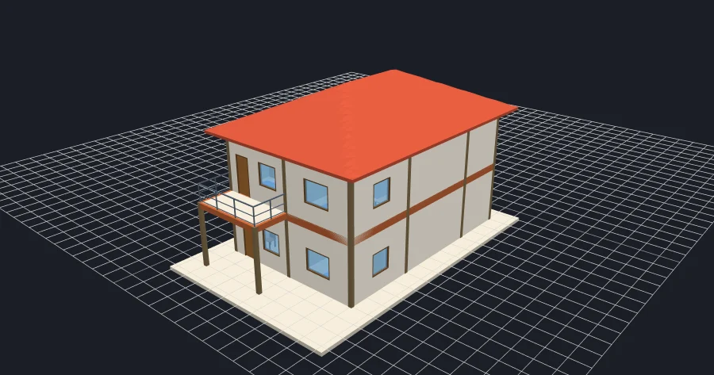

BIM
LiteBIM
Alat pemodelan BIM ringan: denah 2D dan tampilan 3D bertingkat, lengkap dengan elemen struktur, RAB, dan lembar gambar.
- BARUImpor IFC dari Revit, ArchiCAD, dan software BIM lain
- BARURAB otomatis dari model, harga satuan acuan daerah (IKK) atau input sendiri
- BARUVolume bekisting kolom, balok, dan pelat lantai beserta rinciannya
- Dinding, pintu, jendela, kolom, balok, tangga, atap, ruang, dan furnitur
- Potongan A/B, tampak, dan set lembar gambar siap cetak
- Ekspor IFC, DXF, CSV, dan simpan/buka file proyek
Wajib login dengan akun Gmail untuk membuka aplikasi.